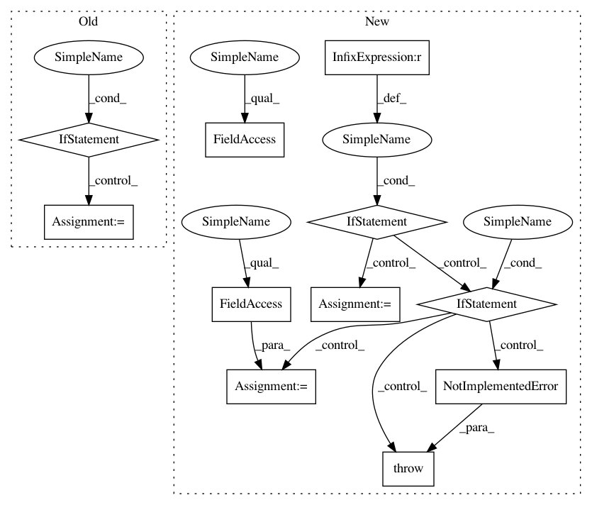

6e0c869f5e17c734010fe7cc1b975ef178af9d1c,agents/dagger/train/train.py,,run,#Any#Any#Any#,45
Before Change
for bad_layer in ["fc6", "fc7", "fc8"]:
if bad_layer in v.name:
found = True
if found:
continue
pretrained_var_map[v.op.name[6:]] = v
alexnet_saver = tf.train.Saver(pretrained_var_map)
def init_fn(ses):
After Change
def run(resume_dir=None, data_dir=c.RECORDING_DIR, agent_name=None):
// TODO: Clean up the net_name stuff
if agent_name is None:
net_name = net.ALEXNET_NAME
elif agent_name == "dagger_mobilenet_v2":
net_name = net.MOBILENET_V2_NAME
else:
raise NotImplementedError("%r agent_name not associated with trunk net" % agent_name)
os.makedirs(c.TENSORFLOW_OUT_DIR, exist_ok=True)
if resume_dir is not None:
date_str = resume_dir[resume_dir.rindex("/") + 1:resume_dir.rindex("_")]
else:
date_str = c.DATE_STR
sess_train_dir = "%s/%s_train" % (c.TENSORFLOW_OUT_DIR, date_str)
sess_eval_dir = "%s/%s_eval" % (c.TENSORFLOW_OUT_DIR, date_str)
os.makedirs(sess_train_dir, exist_ok=True)
os.makedirs(sess_eval_dir, exist_ok=True)
// Decrease this to fit in your GPU"s memory
// If you increase, remember that it decreases accuracy https://arxiv.org/abs/1711.00489
batch_size = 32
x = tf.placeholder(tf.float32, (None,) + c.BASELINE_IMAGE_SHAPE)
y = tf.placeholder(tf.float32, (None, c.NUM_TARGETS))
log.info("creating model")
with tf.variable_scope("model"):
global_step = tf.get_variable("global_step", [], tf.int32, initializer=tf.zeros_initializer, trainable=False)
if net_name == net.ALEXNET_NAME:
eval_model_out, model_in, model_out = setup_alexnet(x, net_name)
elif net_name == net.MOBILENET_V2_NAME:
eval_model_out, model_in, model_out = setup_mobilenet_v2(net_name)
else:
raise NotImplementedError("%r net not implemented" % net_name)
l2_norm = tf.global_norm(tf.trainable_variables())
loss = 0.5 * tf.reduce_sum(tf.square(model_out - y)) / tf.to_float(tf.shape(x)[0])
tf.summary.scalar("model/loss", loss)
tf.summary.scalar("model/l2_norm", l2_norm)
total_loss = loss + 0.0005 * l2_norm
tf.summary.scalar("model/total_loss", total_loss)
starter_learning_rate = 2e-6
// TODO: add polyak averaging.
learning_rate = tf.train.exponential_decay(starter_learning_rate, global_step=global_step,
decay_steps=73000, decay_rate=0.5, staircase=True)
opt = tf.train.AdamOptimizer(learning_rate)
tf.summary.scalar("model/learning_rate", learning_rate)
grads_and_vars = opt.compute_gradients(total_loss)
visualize_model(model_in, model_out, y)
visualize_gradients(grads_and_vars)
summary_op = tf.summary.merge_all()
update_ops = tf.get_collection(tf.GraphKeys.UPDATE_OPS)
with tf.control_dependencies(update_ops):
train_op = opt.apply_gradients(grads_and_vars, global_step)
init_op = tf.global_variables_initializer()
if net_name == net.ALEXNET_NAME:
init_fn = load_alexnet_pretrained(init_op)
else:
def init_fn(ses):
In pattern: SUPERPATTERN
Frequency: 3
Non-data size: 11
Instances
Project Name: deepdrive/deepdrive
Commit Name: 6e0c869f5e17c734010fe7cc1b975ef178af9d1c
Time: 2018-04-26
Author: cquiter@gmail.com
File Name: agents/dagger/train/train.py
Class Name:
Method Name: run
Project Name: facebookresearch/pythia
Commit Name: 88a836a73c0b324fc116f284759dbb9c3de22e63
Time: 2020-10-14
Author: asg@fb.com
File Name: mmf/modules/encoders.py
Class Name: TextEncoder
Method Name: __init__
Project Name: zegami/image-similarity-clustering
Commit Name: dcd82a95dee25d14cdf112b5be18e6dc0a19c7eb
Time: 2020-03-18
Author: douglawrence0010@gmail.com
File Name: cli.py
Class Name:
Method Name: main
Project Name: deepdrive/deepdrive
Commit Name: 6e0c869f5e17c734010fe7cc1b975ef178af9d1c
Time: 2018-04-26
Author: cquiter@gmail.com
File Name: agents/dagger/train/train.py
Class Name:
Method Name: run